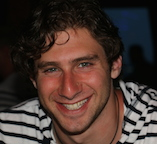

Lab Director
 Dylan D. Wagner, Ph.D.
Dylan D. Wagner, Ph.D.
Assistant Professor of Psychology
email | Faculty page | google scholar | cv
Dylan Wagner joined the psychology faculty at The Ohio State University in the fall of 2014. He is also a member of the Center for Cognitive and Behavioral Brain Imaging and the Center for Cognitive and Behavioral Science. He received his B.A. in Psychology from McGill University and his Ph.D. in Psychology from Dartmouth College with Todd Heatherton. His post-doctoral research was conducted in collaboration with James Haxby and Todd Heatherton. His research covers several topics related to person perception, social cognition, self-regulation and social neuroscience.
Post-Doctoral Fellows
 Robert Chavez, Ph.D.
Robert Chavez, Ph.D.
email | Personal Website | google scholar | cv
Robert Chavez graduated from Dartmouth College with a PhD in Cognitive Neuroscience in 2015. His research investigates how brain regions work together to represent information about the self, other people, and the ways in which people differ from one another. More specifically, he is interested in how the structure and function of the medial prefrontal cortex (MPFC) contribute to these phenomena. The MPFC has been implicated in myriad cognitive and affective processes, from memory and reward to social cognition and self-representation. However, the details of how this large, complex brain region encodes and integrates information to give rise to these processes remain poorly understood. His research aims to address these issues using multimodal neuroimaging and statistical learning approaches.
Graduate Students

Jonathan Stahl
email
Jonathan Stahl graduated from New York University in 2012 with a BA in Human Relationships and Attraction Theory. His current research focuses on how the brain models person knowledge, and how that knowledge can be misattributed to others, updated, or otherwise changed. He is specifically interested in how narratives, either presented or self constructed, can reinforce learned information about a person. Previously, his work has been in the field of neuroaesthetics, examining how the brain responds to beauty in both artwork and faces.
Lab Manager
 Allison Londerée
Allison Londerée
email
Allison Londerée graduated with B.S. in Neuroscience with a minor in Integrative Approaches to Health and Wellness in 2015. She worked with Ruchika Prakash on her undergraduate thesis. Broadly, she seeks to analyze the impact of different lifestyle choices and perceptions on cognitive functioning using both behavioral and neuroimaging (fMRI) methods in healthy individuals and clinical populations.
Other than working in lab, Allison enjoys playing board games, hiking, and exploring vegetarian cuisine!
Undergraduate Students
- Zach Preugh
- Michael Terranova